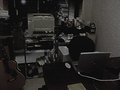
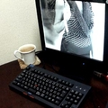

 
これまで家人の誰も入る事ができないほど詰め込んだ部屋で仕事をしていたけれど、もうそろそろ限界。とりあえず使わないコンピュータその他にはを納戸にいってもらって机の配置などを変更。これだけモノがあったら少々整理してもたいして変わるまいと多寡をくくってた自分が感心するくらい落ち着いた。「ひろ～い！(覗いた孫の第一声)」。
使わないまま忘れてたものが出てきたりして副産物もいくつか。一番のヒットがCPU/モニタ切り替え器周りを確認し直したら、サーバに使用していたお気に入りのIBMキーボードがMacにも使えるのがわかったこと。というわけで、右のキーボード(マウスはトラックなんとかね)とモニタはMacです。
少しは人間らしい環境になったかしら…。
年末は、まだ２台稼働しているFreeBSDのサーバを一台にまとめるんだなあ。